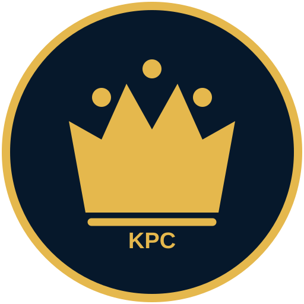

Kings Poker Club
KPC Mental Game
Préparation mentale, SOS Tilt, journal, hand review et progression poker dans une seule application Android.
« Je ne contrôle pas les cartes, mais je contrôle la qualité de mes décisions. »
Télécharger l'application AndroidVersion 1.3 • Android 8.0 et +
Installation :
1. Télécharge le fichier APK.
2. Ouvre-le depuis les téléchargements du téléphone.
3. Si Android le demande, autorise l'installation depuis cette source.
4. Appuie sur Installer.
1. Télécharge le fichier APK.
2. Ouvre-le depuis les téléchargements du téléphone.
3. Si Android le demande, autorise l'installation depuis cette source.
4. Appuie sur Installer.
Les prochaines versions seront détectées directement par l'application. Lorsqu'une mise à jour est disponible, KPC Mental Game proposera de la télécharger.

Scanne ce QR code pour retrouver cette page depuis un autre téléphone.